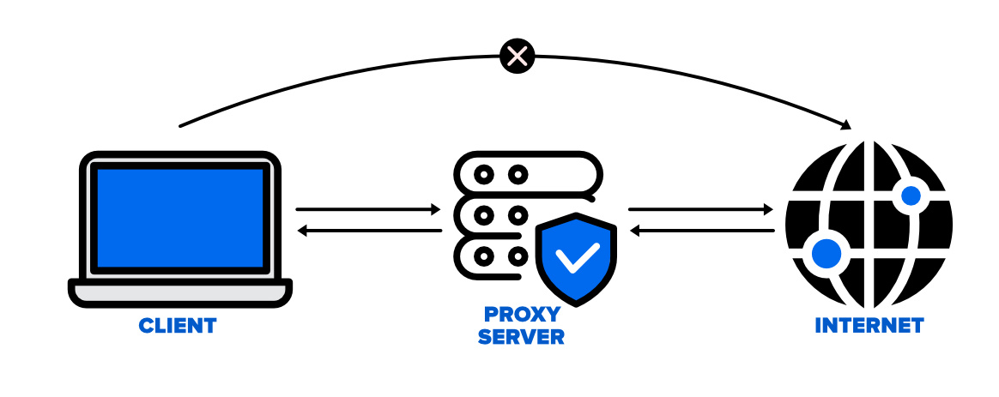

Final-year cybersecurity dissertation focusing on data visualization and threat analysis.
This dissertation project explores advanced cybersecurity analytics and visualization techniques. It integrates multiple data sources to identify patterns in network activity and potential vulnerabilities. The project includes a full technical report, code samples, and a demonstration of the visualization dashboard.
Go to Repository
Network-based project demonstrating proxy configuration and secure data routing.
The Proxy Server project focuses on implementing a secure and efficient proxy system for managing client requests. It demonstrates traffic routing, caching, and encryption mechanisms to ensure data integrity and privacy. The project highlights my understanding of server-side networking and system optimization.
Go to Repository